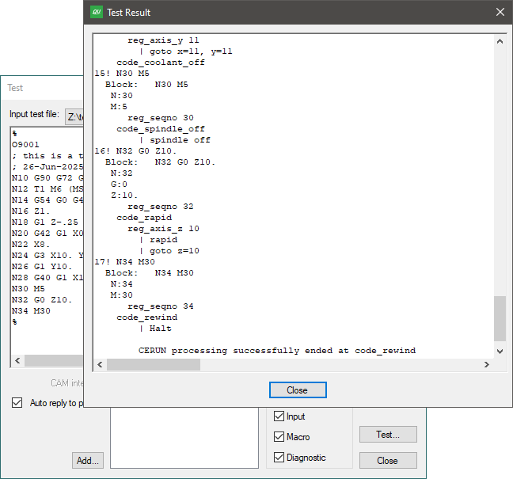

Using QUEST
This section describes the QUEST interface and other details necessary to effectively create and maintain control emulators.
The image below shows the various components of the complete QUEST interface. This reference manual does not describe how to interact with standard Windows components (such as toolbars, list-boxes or push-buttons). Instead, this section will concentrate on the purpose of each of the main windows (there are three: navigator, working and information) and some of the key functions available through the menu-bar and toolbar menus.
{kind=link}
QUEST Windows Interface
The QUEST Interface
The QUEST interface consists of three main windows:
1) The left hand window is the Navigator, which is used to view the list of control emulators in a database as well as to access the different information components of a control emulator. Select the “Database” tab at the bottom of the navigator window to see the list (if any) of databases. Individual control emulators can be read into QUEST from the database so they can be viewed or modified. Each control emulator, once loaded, can be accessed by selecting one of the named tabs at the bottom of the navigator window. The Help tab in the Information window displays information about the entry selected in the Navigator. Double-click on a section entry in the Navigator window to make changes to that section.
2) The upper right window is the Main working window. This window will change to show lists of questions, tables of results, dialog panels, macro editors, et cetera, primarily as a result of selections made in the Navigator. Most of your interaction with QUEST will occur in the main window. You can press the F1 function key to obtain context sensitive on-line help on how to use the main window.
3) The lower right window is the Information window. This window holds various types of information, each of which can be accessed by selecting one of the organizational tabs arranged along the bottom edge of the window. Most of the time, QUEST will automatically select the proper tab for you based on the last feature or action requested. The tab names and their purpose are as follows:
The Help tab provides detailed help when the Main window focus is on a question, or when a section is selected in the Navigator window.
The Build tab lists informational and diagnostic messages when they occur. You can often double-click on a diagnostic message to address the problem in the Main window.
The Consistency tab lists inconsistencies found in the control emulator. Use the Tools» Consistency menu-bar selection (Ctrl Shift G shortcut) to run the consistency checks. Double click on a line in the Consistency tab to review or correct a listed inconsistency. This opens the appropriate section with the problematic item in focus. The F4 and Shift F4 keys can be used to move forwards and backwards through the list of inconsistencies. The following checks are performed:
Differences in question responses as compared to the General Description/General Information question 4 “Machine defaults” selection. The expected response is shown on the line within parentheses; the actual response is shown at the end of the line.
Differences in question responses as compared to the General Description/General Information question 5 “Control defaults” selection. The expected response is shown on the line within parentheses; the actual response is shown at the end of the line.
Inconsistencies between question responses from different sections. This is shown in the same way as during a File»Generate, with the root question listed first and those with inconsistent responses listed with a slight indent below it.
Code inconsistencies, which are the result of two or more functions sharing the same G or M code. These are also listed during a Generate.
Data inconsistencies, which are typically caused by custom DATA identifiers that reference deleted registers. These are also listed during a Generate.
The Finder tab lists the results of the last search operation. Use the Tools»Finder menu-bar selection (Ctrl Shift F shortcut) to find questions, tape editor definitions, dialogs and macros containing text matching a “search” string (press F1 to obtain help on search features). Double-click on any line listed in the Finder tab to change the Main window focus to the selected item. Use F4 and Shift F4 to sequentially shift the Finder tab focus (and indirectly the Main window focus) forwards and backwards through the list of items found.
The Diffs tab lists the differences between two selected control emulators and/or post-processors. Use the Tools»Diffs menu-bar selection (Ctrl I shortcut) to identify the objects to compare (press F1 to obtain help on comparison features). You can double-click on any line with a solid arrow to change the Main window focus to the selected item. Various right-mouse context menu functions are also available in the Diffs tab to help view the comparison results.
The Axes tab lists all machine axes and provides sliders that can be used to exercise the machine model. This feature is only available with a Virtual Machine Developer’s license (vmq260).
The menu-bar at the top of the application window provides access to QUEST functions. Not all menu actions are available at all times. For example, some database actions are only available when a database or control emulator is selected in the navigator. Other menu actions are related to the macro editor and will only be available when a macro is being edited. Keyboard shortcuts are available for some common menu actions (the shortcut key is listed in the menus to the right of the menu selection).
The most common menu actions are also available through toolbar shortcuts (the little icons arranged below the menu-bar). Toolbars are dockable (i.e., they can be dragged to any side of the application window, or even be made to appear as a separate window). Like the menu-bar selections they represent, toolbar icons may not be selectable at all times.
The right-mouse button can be used to bring up a pop-up menu (context sensitive menu), listing the most common menu choices that can be made in the current window or on the item last selected. Pop-up menus also provide access to modal display and processing options. This feature is highly recommended to those who are new to QUEST, since it lists the most common actions based on the current context.
The vertical splitter bar can be used to increase or decrease the width of the Navigator window. The horizontal splitter bar likewise determines how the main working window and informational window share the full application window height. You can double-click on the splitter bar to quickly reset it to its last position.
Creating a New Control Emulator
When QUEST is first run, the application window will appear as shown below.
{kind=link}
QUEST as it looks when first run
You create a new control emulator using the File»New CE drop down menu selection. A control emulator can be developed from scratch by selecting the Blank menu sub-option. It can also be developed, based on information previously entered for a post-processor in the database, by selecting either the From Existing Post or Link to Post sub-options. These choices are described in more detail below.
Regardless of how the control emulator is created, the Main work window will then change to show a short list of questions, with tabs arranged along the bottom. Your first action should be to change the control emulator name (i.e., NONAME,1) to something more appropriate.
QUEST supports two different question display styles. The “classic” style is a top-down list of questions, organized one per line. This is the format that is used in textual examples in this manual (as shown in the text example below). A more modern “graphic” question style uses typical windows controls such as radio-buttons, checkboxes, drop-down lists, et cetera. This is the format that is used in example images in this manual (as shown in the “A stopper question” image). You can switch between styles at any time using the View»Graphic Questions menu-bar toggle or the right-mouse button Graphic Questions pop-up menu toggle. You can also enable or disable the organization of questions by bottom tabs using the right-mouse button Use tab pop-up menu toggle.
When creating a control emulator from scratch, the third question in the list will be shown highlighted in red (a stopper question) indicating that an answer must be provided before you can continue or even exit the section.
3.00 Machine type: [Contour,Lathe,Mill-Turn,Mill,Robot,Composite] (No Response)
All classic style questions have this same appearance. The square brackets [ ] define the acceptable responses (answers) to the question. The parentheses ( ) show the current response to the question. Answers can be typed by first selecting the question using the mouse or arrow keys, typing your response (abbreviations are accepted) and then pressing the Enter key. You can also answer a question using the mouse. When you move the mouse pointer over the items in the brackets and parentheses, they will be highlighted in a same way a browser does. You can click on a highlighted item to change the response to the question. For example, to answer “Mill” for question #3, you can move the mouse pointer over the word inside the [ ] brackets and then click the left-mouse button.
Graphic style questions have a more varied appearance. Lists of acceptable responses to a question are sometimes listed vertically in a selection box and at other times in a drop-down list. Simple yes/no questions often use a checkbox, where a checked response means “yes”. Some questions show a list of acceptable responses in square brackets [ ] as part of the question prompt. The interface is designed, as much as possible, to show the list of possible responses to each question, along with the current response. You change the current (default) response to a question by using the mouse and left-mouse button to point to and select another listed choice for that question. For simple edit box type controls, such as the control emulator name selection, you must select the edit box using the mouse and then either type in a new response or edit the current response. Many question types include a […] button, which when selected will activate a dialog box to assist you in changing the response to the question.
The “Help” information window (bottom right of the application window) will always describe the selected question in more detail. The selected question is normally listed in blue. When using the graphic question style, help information will be shown as a balloon tooltip when you leave the mouse pointer over the input field of a question. You can enable or disable help tooltips at any time using the right-mouse button Show Help Tips pop-up menu toggle.
Red “stopper” questions are those that do not have a default response. They must be answered before you can continue. In fact, all questions following the stopper one will not be shown, nor can the section be exited until a valid answer is given (the OK button will not be selectable). If the questions are grouped under organizational tabs, the tab containing the stopper question will be shown in red. In the image below, question 3.00 is a stopper question.
{kind=link}
A “stopper” question
Questions are listed in green if they have a response that is different from the default (i.e., those where you selected or typed an answer different from what was shown in the ( ) parentheses). You can reset a question back to its default state (provided it had a default) using the right-mouse context menu. One of the menu choices will be Reset to “whatever”. You can reset every question in the section back to its default by clicking on the Reset button at the bottom of the window.
Depending on the right-mouse button Auto Clear pop-up menu setting, questions and tabs might be shown in a light grey. If a question is greyed out, it means that it is no longer applicable based on some earlier response in the section. If an organizational tab is greyed out, then all questions listed in that section are no longer applicable, based on some response in another tabbed section (generally to the left). To see this in action, uncheck the Auto Clear option and then choose different responses to the machine type question (#3). Questions that are appropriate for milling machines will be greyed out when the machine type is changed to a lathe. Some people prefer to see this effect when they are answering questions in a section, others find it confusing. Greyed out questions are cleared when a section is exited or the right-mouse button Clear Now pop-up menu is selected.
All questions are numbered. You can choose to see or not see the question numbers using the right-mouse Show Question Numbers pop-up menu toggle. This setting affects the appearance of questions in the work window, but has no effect on the Finder, Diffs and other QUEST functions.
Control Emulator Definition
The easiest way to develop a control emulator (CE) is to base it on an existing Icam Post post-processor or if that is not possible, then to base it on a pre-existing controller architecture (i.e., a “basic CE”). Your choices when creating a new control emulator are listed below.
Creating a CE linked to a Post-Processor
The information needed by Control Emulator to process the MCD is, for the most part, identical to the information needed by Icam Post to generate the MCD. If a post-processor has already been written for the CNC, then a control emulator can be created as a “link” to the post-processor. The advantage with a link is that if the post-processor is later edited, then the control emulator will use the most recent version of the post-processor when emulating the CNC.
Use the File»New CE»Link to Post menu selection to create a control emulator that is linked to a post-processor residing in the same database. You will be prompted to select the post-processor from a list of post-processors in the current database. You can select a different database to use as the basis, but the control emulator being developed must be saved to the same database as the post- processor to which it is linked.
The following General Description / General Information questions define the link setting and the name of the post-processor to which the control emulator is linked:
2.10 Data from another post-processor: [Yes,No] Yes
2.20 Associated post-processor: name,id
With this setting, the questionnaire responses are obtained from the specified post-processor. If the questionnaire section of the post-processor is modified, then the control emulator will use the most recent responses when it is opened in QUEST or run with CERUN.
Only the questionnaire section of the post-processor is used by the control emulator. The customization section of the post-processor is not used since the control emulator has its own unique customization capabilities.
Creating a CE based on a Post-Processor
Use the File»New CE»From Existing Post menu selection to create a control emulator that is based on the questionnaire section data of a post-processor. You will be prompted to select the post-processor from a list of post-processors in the current or selected database. The control emulator does not have to be saved to the same database as the post-processor, since the data is copied when the control emulator is created; there is no link to the post-processor.
Only the questionnaire section of the post-processor is copied and used by the control emulator. The customization section of the post-processor is not copied since the control emulator has its own unique customization capabilities.
The Tools»Diff utility can be used to compare the questionnaire section differences between a control emulator and a post-processor to check for divergence.
Creating a CE from scratch
Use the File»New CE»Blank menu selection to create a control emulator that is not based on a post-processor or other control emulator. In this case, you will have to go through the questionnaire sections and enter the appropriate responses to define the properties and behavior of your CNC machine. This process can be greatly simplified if you can base your answers on a known controller architecture. QUEST provides many “basic CE” defaults in support of popular and less well known controllers. You specify the controller basic CE using question 5.00 in the General Information section:
5.00 Control defaults: [NA,File_name,File_panel] (NA)
Click on File_panel and then choose an appropriate controller from the list that will be presented. If a basic CE is not selected, then QUEST follows the ISO 6983 standard where possible.
Every question originally starts off in an unanswered state and most unanswered questions have a default response. QUEST determines the default response for a question in a number of ways.
From the basic CE: Basic CEs define default responses to just those questions that apply. For example, a control-type basic CE won’t define default answers for machine specific features (e.g., number of spindle gears).
From the ISO 6983 standard: Default responses for control related questions will follow this international standard where applicable.
Derived from earlier answers: QUEST will propose default responses that are consistent with earlier responses in the same section and sometimes from other sections higher up in the Navigator list.
All questions in a section are marked as answered when you press the OK button to leave the section. All questions in every section are marked as answered when you Generate the control emulator (i.e., save it in a format ready to be used by CERUN). All questions in a section are reset to an unanswered state when you press the Reset button. Individual questions can be reset using the “Reset to” pop-up context menu. Answering a particular question in a section marks all lower numbered questions in that section as answered. To take advantage of QUEST’s capability to derive default responses, try to answer questions in a section in order from lowest numbered to highest numbered.
Changing your Control and Machine default choices will have no effect on any question that has already been answered.
Specifying a Pre-Processor
The questionnaire section does not cover the use of CNC variables, flow control, functions and expressions. There is no plausible set of questions that can handle the variances in this functionality from one controller to another and even if there were, answering these questions would likely prove difficult. Control Emulator instead comes with a number of predefined “pre-processors” that include all of the necessary logic to handle these advanced CNC capabilities.
QUEST provides pre-processors for some well known controllers. You specify the pre-processor using question 7.00 in the General Information section:
7.00 Controller Pre-Processor: [NA,File_name,File_panel] (NA)
Click on File_panel and then choose an appropriate pre-processor from the list that will be presented.
When a pre-processor is selected, the control emulator customization section will include three additional macros that can be used to fine-tune the behavior of the pre-processor. The Pre-Processor Startup and Pre-Processor Shutdown macros provide access to the MCD block before and after it is processed by the pre-processor. A Pre-Processor Identification macro can be written to extend the functionality of the pre-processor to handle additional variables and functions.
More information about pre-processors and their capabilities can be found by selecting the “online documentation” link at the bottom of the descriptive text in the Controller Pre-Processor selection dialog.
Questionnaire Chapters and Sections
The QUEST Navigator window will list a series of chapters and sections that comprise the knowledge base for the current control emulator see the Navigator contents in the “QUEST Windows Interface” image). Each control emulator consists of a number of chapters. Each chapter in turn consists of a number of sections. Most (but not all) sections present a list of questions as described earlier. Section icons in the navigator use different colors and emphasis to show if the section has been answered or not and, in some cases, if the feature is available on the machine/controller or not. Double-click on a section name in the Navigator to view and/or change the knowledge base for that section in the Main window (i.e., the upper right working window). Single-click on a section name in the Navigator to view the knowledge base for that section in the Help window.
The following is a list of chapters and sections of the questionnaire. Depending on the CNC type and its features, some of these sections and chapters might not be listed (since they do not apply).
The General Description chapter has sections that obtain a variety of important upfront information The General Information section for example determines the control emulator name, machine type, kinematics configuration, units and positioning. Use the Comments section to record revision change information and other important notes about the control emulator. The Registers section determines the format of the word addresses supported by your control. This section should be answered early on, since many questions derive their default answers based on the availability and format of specific word addresses. The G/M Code Assignments section defines the (G) and (M) code word addresses. The Output Format section determines some important information about the format of the NC program codes that will be processed by CERUN. The Integration section contains information that CERUN requires to properly control a Dassault Systèmes DELMIA model.
If a control emulator is created as a link to an existing post-processor, then only the Comment, General Information and Integration sections of the General Description chapter will be listed. No other chapters and sections will appear, since the questionnaire data is supplied by the linked post-processor.
The Machine Description chapter has sections that define the particulars about each of the machine’s axes (e.g., sign of the axis, velocity, travel limitations, offsets). The Home Position and Reference Point section defines information about the primary home point. The Feedrate section defines how interpolation velocity is controlled. The Tool Change and Spindle sections (not present for contouring machines) define the capabilities of the tool change device and those of the milling and turning spindles.
The Control Description chapter is mostly concerned with the various interpolation types and motion related advanced features that are supported by the controller. The Coordinate System section defines the plane selection codes (e.g., G17-19), in addition to translation, rotation, scaling and mirror (LCS) capabilities of the control. The Rapid Positioning, Linear Interpolation and Circular and Helical Interpolation sections define the particulars of these three main interpolation types. The Tool and Fixture Compensation section defines tool length, tool radius, 3D tool and fixture compensation capabilities and codes. The Advanced 5D Machining section defines tool-tip programming (RTCP) and Cartesian-to-polar (C2P) features available for machines with continuous rotary axes. The High Speed Machining section (only available with a xhs260 license) enables accel/decel with Virtual Machine models.
The Automated Canned Cycles chapter is only present for lathes and for mills with a Z axis. It has a General Drill Cycle Information section and a Drill Cycles section that handle the requirements for single-point cycles such as drilling, tapping, boring et cetera. Answer the General Drill Cycle section first, since answers in this section have an effect on the Drill Cycles section. The Thread Cycles section handles single-pass and multi-pass threading cycles available on many lathe controllers.
The Optional Post-processor Words chapter has sections that deal with various features of the machine and controller. They are organized by their related ISO 4343:2000 standard control emulator command name. For example, the COOLNT Command section has questions dealing with various types of coolant, which are controlled in the post-processor using a COOLNT command.
The Control Emulator Customization chapter is designed to handle machine and controller requirements that are not supported in any of the other sections. Note that in most cases, customizing a control emulator requires a knowledge of the ICAM macro programming language. This section starts with Code Customization and Data Customization sections that are used to fine tune the codes and register information gathered from the questionnaire section. It has a set of Startup/Shutdown Procedures and Event Macros that can be used at key points in the program (for example, start of program or tool change) to handle special or repetitive requirements. The Code Macros and Data Macros sections allow you to define the actions of the CNC to simulate features of your machine not covered by Control Emulator. A Tape Editor section can be used to define a series of find/replace strings, which will be applied to the MCD as it is read. The Dialog Editor section can be used to define dialog boxes that can be used by your control emulator, through macros, to prompt the NC programmer for input while CERUN is running. The User Function Macros section allows you to create your own macro functions that can be called by other macros in the control emulator. Finally, a File Storage section is available to store resident CNC subprograms that can be used by CERUN, or other data that can be read by the macro processor. See “Control Emulator Customization” for more details.
The Code Table section is a reference table listing the codes that have been defined in all questions asking for a G or M code. The code is listed as it will appear in the MCD along with: its code identifier, the register and value(s) that identify the code, and a description if available. If a code has associated registers, they are listed below the code. Double-click on a code or register to go directly to the question where that code or register was defined. Click on a column header to sort the list using the selected column.
The General Description / Registers section contains a “Use default resolution/minimum/maximum values” checkbox that when selected will inhibit the resolution, minimum and maximum value questions that typically immediately follow each register definition. When checked, the resolution and minimum responses will be set to the smallest value that can be represented by the register; the maximum response will be set to the largest value that can be represented by the register. The checkbox is enabled by default on new control emulators. The checkbox setting is saved with the control emulator when exporting, saving or generating.
New and even experienced users sometimes have trouble finding a question that relates to a feature of the control or machine they are trying to define or modify. Before trying to customize a control emulator, we strongly recommend that you first use the Tools»Finder menu-bar selection (Ctrl Shift F shortcut) to find questions related to the feature (see here).
Saving and Generating your work
Changes made to a control emulator occur in the in-memory copy. To preserve your work, you have to either Save or Generate the control emulator to the control emulator database (see The ICAM Database for details on the database). Save your work periodically when performing extensive or time consuming changes, since your changes will be lost if a power failure or system hang-up occurs.
The File»Save menu-bar selection saves a copy of the control emulator exactly as-is. Use this to save your work on an interim or periodic basis.
The File»Generate menu-bar selection first checks the control emulator for inconsistencies, then marks all questions as answered and finally creates control emulator documentation for record-keeping purposes, before saving the control emulator to the database. Generated control emulators can be used by CERUN in a production setting. A QUEST listing will be created while generating, which contains the responses, macro source and other data that comprises the control emulator. The listing is written to the same directory as the control emulator database, or to the directory specified by the icam_lis environment variable if set.
Two types of errors can be detected during the consistency checking: invalid or missing responses to questions in a particular section; and inconsistent responses to questions in different sections.
The first type of error occurs when a section or question is encountered that has not been answered and for which defaults responses are not available (i.e., stopper questions). This type of error will cause the Generate function to abort after creating the control emulator documentation but before saving to the database (i.e., a new control emulator will not be generated). As each error is detected, a message will appear in the documentation at the point of error and a similar message will be shown in the Build information window. The most common error is when two or more functions of the control emulator have been answered using the exact same MCD, as shown in the example below:
Conflicting codes: M6 (code_tool_load) M6 (code_tool_load_manual)
The solution is to change the questionnaire responses so that either the codes are unique or one of the functions is removed. Double-click on the error message in the Build window, or right-mouse on the error and select “Go to Error/Tag”, to correct the question in error. Right-mouse and select “Disable Code” to ignore the conflicting code (this action can be undone in the Code Customization section).
The second type of error occurs when an answer to a particular question is inconsistent with answers to one or more other questions in other sections. This type of error (warning actually) will not cause the Generate function to abort (i.e., a new control emulator will be generated). As each inconsistency is detected, the problem is registered, grouped together with related problems and displayed in both the Build information window and the documentation. Double-click on the indented consistency warning (in the Build window) to correct what QUEST believes is the root or source of the problem. Double-click on outdented consistency warnings to correct the result or target of the problem.
Regenerate once all problems have been corrected. It is not an error to have control emulators with inconsistencies.
Testing your Control Emulator
The Tools»Start Runtime menu-bar selection (F9 shortcut) provides a convenient method of running CERUN against any of the control emulators currently being edited. When testing the control emulator in this manner, it is not necessary to generate or even save the control emulator before starting CERUN. The standard CERUN launch panel will appear (see “The Launch Panel”). When it does, the default database will show “QUEST -- (CE's in Memory)” and the control emulator name drop-down selection will list those control emulators out for editing that can generate without errors.
Any changes made to your control emulator after selecting the Tools»Start Runtime menu-bar item, but before pressing OK on the CERUN launch panel, will be respected. Changes made after CERUN starts processing will not be respected. The CERUN interface supports a restart capability. Any control emulator changes made prior to restarting will be respected once CERUN restarts.
Note
Because the test feature does not require a saved or generated control emulator, you might be tempted to go long periods of time before saving or generating. You are cautioned to save your work periodically to minimize loss of data caused by power failures or other serious problems.
In addition, a Tools»Test menu-bar selection (F10 shortcut) provides a simple interface to test your control emulator. First drag & drop a test MCD file onto the dialog, or use the […] browse button to locate a file, or type or paste sample MCD into the window. Then press the Test button. An output window will appear, as shown below, tracing the input and processing of the MCD along with any diagnostic messages. The Tools»Retest menu-bar selection (Shift F10 shortcut) can be used to quickly test a control emulator using the last specified MCD file and test settings.
{kind=link}
The input MCD is always shown in the form “line-number! mcd” as each block is processed, as are the actions that the block generates, which are shown in the form “ | action”. Trace options exposes the internal CERUN processing of each block of MCD. Traced output appears as shown below:
12! G1X12Y8.5S1200F#14M3 Block : G1X12Y8.5S1200F#14M3 PrePrc : G1X12Y8.5S1200F20M3 G:1 X:12. Y:8.5 S:1200 F:20 M:3 code_spindle_clw reg_spindle_rpm 1200 | spindle clw, rpm=1200 code_interp_linear reg_feed_upm 20 reg_axis_x 12 reg_axis_y 8.5 | feed f=20 | goto x=12, y=8.5
Selecting the Input tracing check-box will show the various stages of input MCD processing. The Block line lists the MCD as read, but aligned so that you can better see the effect of any tape editor string substitution (identified by a TapEdt header), OPSKIP processing (DelOn and DelOff headers), pre-processor substitution (PrePrc header), embedded macro processing (EmbMac header) and block startup macro processing (BlkMac header). This is followed by the recognized words (i.e., registers) and their values in the left-to-right order that they appear on the block, listed one per line using the format “register:data”. Finally, the recognized CODE and DATA identifiers are traced as they are processed, in the form code_name and reg_name. The order of code processing is dependent on the code’s Order property and not the position of the code the block.
If macros are defined in the control emulator and the Macro tracing checkbox is selected, then macro processing will traced as follows, showing a mixture of macro code and other trace data as it occurs between the point where the macro was activated up until it completed processing:
* Entering macro_name … * Leaving macro_name
Finally, diagnostic messages and completion status information will be traced in the output where they occur during processing if the Diagnostics tracing checkbox is selected. For example:
12! G1X12Y8.5S1200F#14M3L4 … | feed f=20 | goto x=12, y=8.5 Warning: L4 not recognized in 'G1X12Y8.5S1200F#14M3L4'
Modifying an Existing Control Emulator
The File»Open… menu-bar selection can be used to open a control emulator that has been previously saved or generated. You can also open a control emulator by selecting it from the Database Navigator (more on that in the next section). When opened, it is copied into a new or unused Navigator tab. Use the Navigator to select the sections you need to modify.
The Tools»Finder menu-bar selection (Ctrl Shift F shortcut) can help you find pertinent questions or a list of changes you have made to the control emulator. Matching results are shown in the lower right Finder information window (see here).
The Tools»Diffs menu-bar selection (Ctrl I shortcut) can be used to compare the control emulator you are editing against another control emulator or post-processor in memory or in the current or a selected database. The difference output appears in the lower right Diffs information window (see here).
The File»Listing menu-bar selection produces control emulator documentation, which you may find useful for locating where changes are necessary. The listing is written to the same directory as the ICAM database, or to the directory specified by the icam_lis environment variable if set.
Wrapping Up
When you close a control emulator (File»Close or File»Close All), it is removed from the Navigator window. You will be prompted to save your work if you attempt to close an unsaved control emulator, or if you attempt to exit QUEST (File»Exit) before saving all opened control emulators.
If one of the control emulators being edited is stuck on a stopper question, you will receive the message “You must provide a response to this question” when you attempt to close the control emulator or exit QUEST. The stopper condition must be corrected, or the section containing the stopper question must be canceled (using the Cancel button), before you can proceed.
{kind=link}
When exiting, you will be prompted (as shown at right) for the startup configuration to use the next time you run QUEST. You can choose to restart with a new post-processor (note: not control emulator) ready for creation, or to resume with the control emulators, post-processors and models currently open for editing, or to start with an empty session. If this prompt is disabled, you can re-enable it and/or change the restart settings from the “General” tab of the Tools»Preferences menu-bar selection.